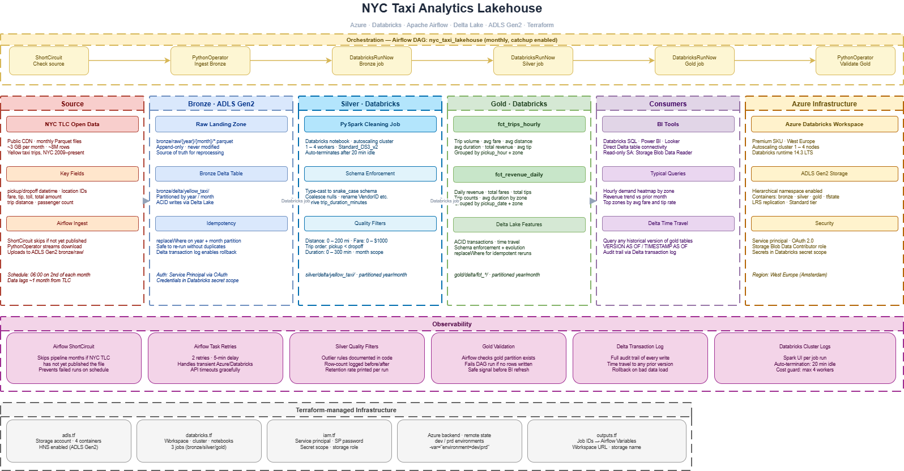

| Type | Portfolio project, fully reproducible and open source |
| Stack | Apache Airflow, Azure Databricks, Delta Lake, ADLS Gen2, PySpark, Terraform |
| Source | github.com/tobial93/nyc-taxi-lakehouse → |

The NYC Taxi and Limousine Commission publishes monthly Parquet files covering every yellow taxi trip in New York City, going back to 2009. Each file is around 3 GB and contains roughly 8 million rows. Raw Parquet files are useful as a historical record but unwieldy for analysis: no consistent schema enforcement across years, no partitioning strategy, no aggregated layer ready for a BI tool.
This project builds a production-grade lakehouse on top of that public dataset, demonstrating how a real batch pipeline bridges raw open data and analytics-ready tables.
The pipeline follows the medallion pattern across three Delta Lake layers, orchestrated by Apache Airflow running locally in Docker Compose.
The Airflow DAG nyc_taxi_lakehouse runs monthly with catchup=True, so a fresh deployment automatically backfills all missing months. A ShortCircuitOperator checks whether the NYC TLC has published the file for that month before proceeding, which handles the typical one-month publication lag without failing the run. A Python operator then streams the Parquet download directly into ADLS Gen2, avoiding any disk bottleneck on the Airflow host.
The three Databricks jobs are triggered via DatabricksRunNowOperator, passing year and month as notebook parameters so each job processes only its own partition.
The raw Parquet file lands in bronze/raw/{year}/{month}/ and is registered as a partitioned Delta table. This layer is append-only and never modified — it serves as the reprocessing source of truth if any downstream job needs to be rerun from scratch.
The PySpark cleaning job enforces a consistent snake_case schema (renaming fields like VendorID to vendor_id), derives trip_duration_minutes, and applies a set of quality filters:
Row counts before and after filtering are logged per run so retention rates are visible in the Airflow task logs without needing a separate monitoring tool.
Two fact tables are produced from Silver:
Both tables use Delta's replaceWhere on the year/month partition, making reruns fully idempotent without touching other partitions.
Delta Lake brings three things that plain Parquet cannot: ACID transactions (so a failed job never leaves a partially written partition), time travel (any prior version of a Gold table is queryable via VERSION AS OF), and schema enforcement that catches upstream changes before they silently corrupt downstream tables. For a monthly pipeline where a bad run might only surface during the next BI refresh, these guarantees matter.
Everything is Terraform-managed across dev and prd environments. Key resources:
The Silver quality filter logic is unit-tested with PySpark in local mode. Each filter rule has a dedicated test that constructs a minimal DataFrame, applies the transformation, and asserts the expected row count and derived values. This makes it straightforward to validate filter changes without running a full Databricks job.
OPTIMIZE and VACUUM Airflow tasks to compact small files and reclaim storage